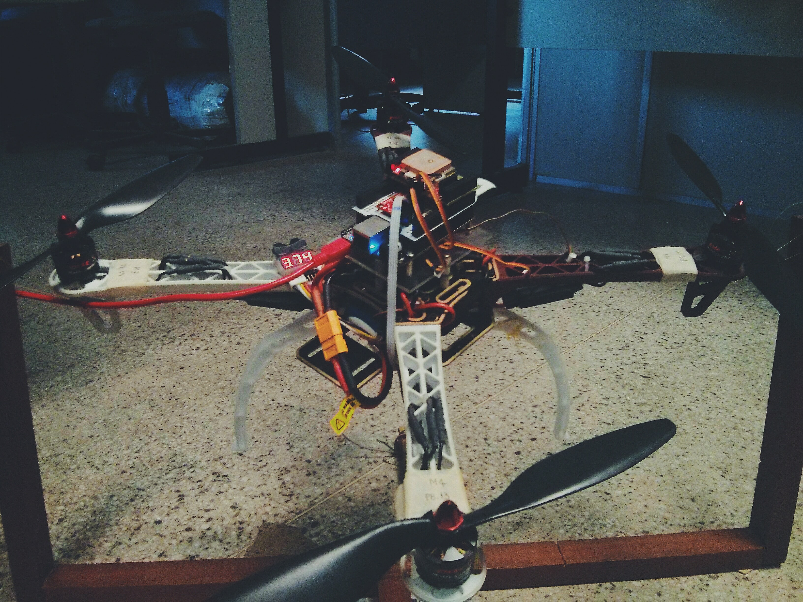

Autopilot

In the early stages of my research as an undergraduated, I designed the software for flight control of a quadrotor. It was used a Beaglebone Black (BBB) Rev C embedded with Debian 8 Jessie as platform of development. The software was divided in three levels according to the task:
I've also contributed to the development of one Device Tree Source for BBB that was needed for the managment of the board I/O in my project. The sources of the devicetree files can be found here.